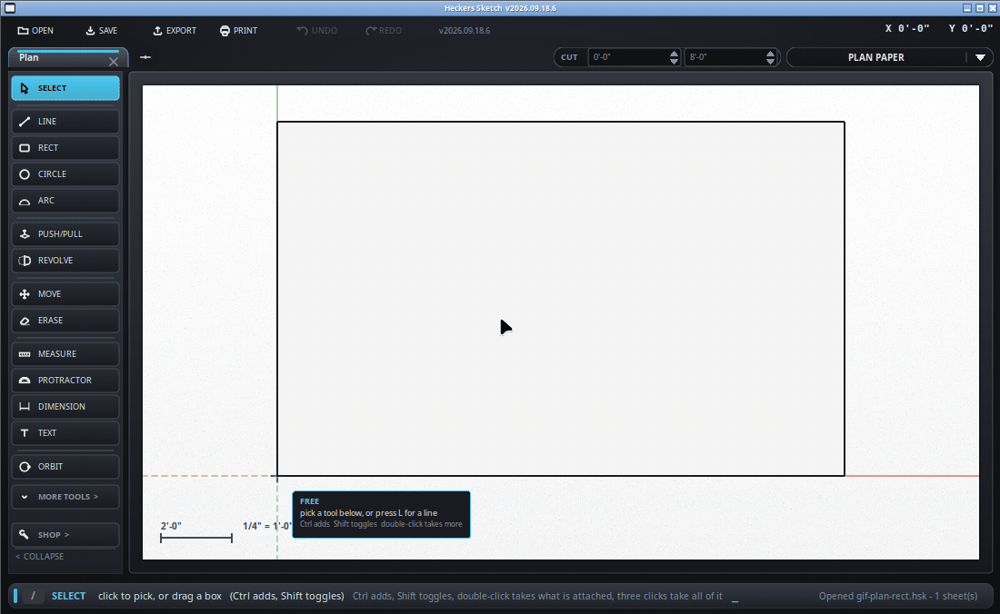

Read a distance.
Keyboard: T
What it leaves depends on where you pulled it from - SketchUp's rule:

| Pulled from | What you get |
|---|---|
| Along an edge - a point in from a corner, say | A guide point where it landed, and no line. A dashed line lying on the edge you measured along marks nothing. |
| Off an edge, into the face | A guide line parallel to that edge, at the distance you measured, and a point. |
| From a corner, or in mid air | A line across the run, and a point. There is no edge to be parallel to. |
The line is dashed and has no ends - it runs the width of the drawing. Where that guide crosses an edge is a place the cursor will snap to - which is the whole reason for laying one. Two guides crossing each other make a point as well.
Rub out the dashed line with the eraser and the point goes with it - they were laid together. To put all the guides away or throw them all away, right-click anywhere on the drawing.
Ctrl, with the tape in hand, cycles what a measurement drops: both the dashed line and the point, the point on its own, the dashed line on its own, or nothing at all. Both is what you get unless you change it, and the bar along the bottom says which mode you are in every time you press it. A 1" mark in from the end of a line rarely wants a dashed line running the width of the drawing with it - that is what the point-only mode is for.
Guides are things you can pick. The select tool takes a dashed line or a point like anything else; right-click it and choose Erase, or press Delete. A guide point is looked for before anything else, so the line it is sitting on cannot steal the click - it is the size it looks, and one attempt gets it. Rubbing out a dashed line with the eraser takes its point along too, since the two were laid together.
The tape is finished the moment it has measured - the second point ends
it. If the run was worth writing on the drawing, /keep turns the
last one into a dimension. It is a command rather than another keypress
because a keypress on a tool that has already finished is how a dimension
turns up an hour later that nobody asked for.